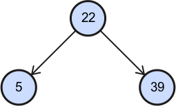
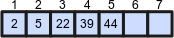

Node
A node represents an individual element of the tree and stores its value.
Learn how to use the Binary Tree Visualiser, understand its graphical elements and explore the operations available for Binary Search Trees and Binary Heaps.
The application provides two interactive visualisers:
Select an operation, provide the required input and watch the application animate the algorithm step by step. The animation and history controls help you follow the algorithm's execution.
A binary tree is a hierarchical data structure in which each node can have at most two children: a left child and a right child. The topmost node is called the root.
A Binary Search Tree follows an ordering rule. Values smaller than a node are placed in its left subtree, while values greater than or equal to the node are placed in its right subtree. This visualiser places duplicate values in the right subtree.
A Binary Max Heap is a complete binary tree in which every parent has a value greater than or equal to the values of its children. Therefore, the maximum value is always at the root.
Unlike a BST, a heap does not maintain a complete sorted left-to-right ordering of all values.
During an animation, the visualiser displays symbols and indicators to explain what the algorithm is currently processing.
A node represents an individual element of the tree and stores its value.
A selected node is highlighted with a red outline. Click a node to select it for operations that require a node.
An edge connects a parent node to one of its children.

A parent can have a left child, a right child, both children, or no children.
Comparison indicators show how the algorithm compares node values.
These indicators show the next node or direction being followed by the algorithm.
Indicates that the current node does not have the corresponding left or right child.
Marks the beginning or completion of an algorithm that traverses the tree.
Shows that the algorithm reached the current node from the indicated child.
Shows that the corresponding previous-child condition is not satisfied.

A binary heap can be represented using an array. In a one-based representation, the children of index i are at positions 2i and 2i + 1.
Animation controls let you follow an algorithm, pause it, replay it or move between recorded operations.
Executed algorithms are recorded in the history list. You can select an earlier operation to replay it and inspect how the tree reached its current state.
Use Previous, Next, Skip Backward and Skip Forward to navigate through the recorded animations.
Generates a random Binary Search Tree using values from the specified minimum and maximum range.
Enter a value to insert a new node. The algorithm compares the value with existing nodes and follows the BST ordering rule until it finds the correct insertion position.
Enter a value to search for its first occurrence. The algorithm follows the BST ordering rule to find the node.
Select a node and use Delete. Deletion handles the standard cases: a leaf node, a node with one child, and a node with two children.
These operations find the smallest or largest value in the selected subtree. If no node is selected, the whole tree is considered.
The predecessor is the previous node in sorted inorder order. The successor is the next node in sorted inorder order. Select a node before executing these operations.
Traverses the tree in Root, Left, Right order and displays the resulting array.
Traverses the tree in Left, Root, Right order. For a BST, the resulting values are in sorted order.
Traverses the tree in Left, Right, Root order and displays the resulting array.
Open Binary Search Tree Visualiser to practise these operations.
Generates a random Binary Max Heap using values from the specified minimum and maximum range.
Enter comma-separated values to construct a max heap. The algorithm rearranges the values to satisfy the max-heap property.
Enter a value to add it to the heap. The new element is placed in the next available position and moved upward as necessary to restore the max-heap property.
Select a node and use Delete to remove it. The heap is reorganised to maintain its structural and ordering properties.
Removes and returns the root node, which contains the maximum value. The heap is then reorganised.
Returns the root node without removing it.
Uses the heap to produce a sorted array. In this visualiser, the resulting array is displayed after the operation.
Open Binary Heap Visualiser to practise these operations.